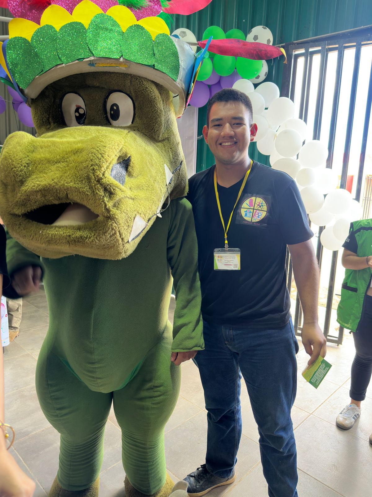
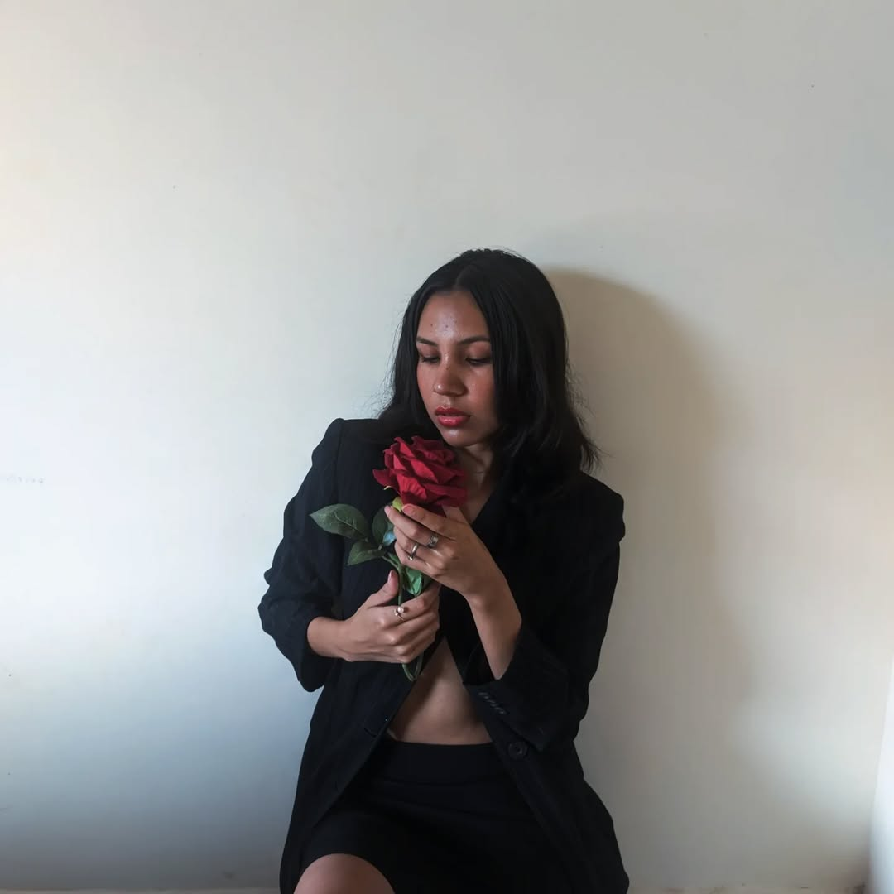
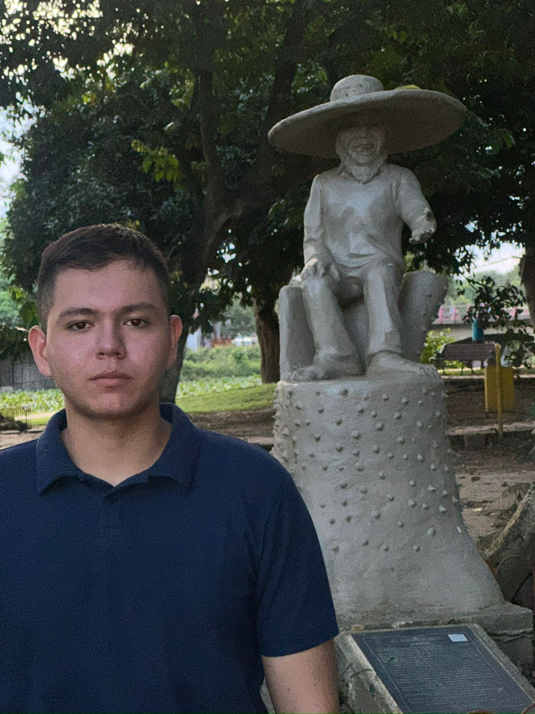
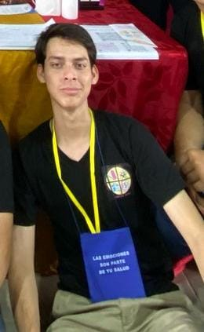
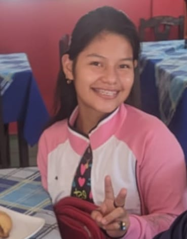
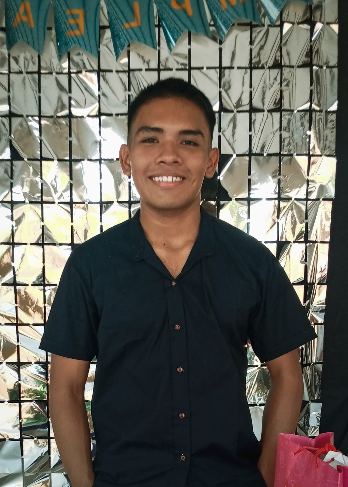
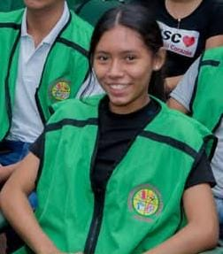

PDPEAJ-Beni
Plataforma Departamental de Prevención de Embarazos en Adolescentes y Jóvenes
Plataforma Departamental de Prevención de Embarazos en Adolescentes y Jóvenes
Conoce al equipo de jóvenes voluntarios que lideran la Plataforma Departamental de Prevención de Embarazos en Adolescentes y Jóvenes del Beni.
La directiva de la PDPEAJ-Beni está conformada por jóvenes benianos que dedican su tiempo y esfuerzo voluntariamente para trabajar en la prevención de embarazos adolescentes y la promoción de la salud sexual y reproductiva en nuestro departamento.

Johan lidera la plataforma con compromiso y visión, promoviendo la participación juvenil y la prevención de embarazos adolescentes.

Ariana impulsa la participación activa de las jóvenes, fomentando la igualdad y el liderazgo femenino en la plataforma.

Johnny apoya la gestión y coordinación de actividades, asegurando el trabajo en equipo y el cumplimiento de los objetivos.

Mauricio representa a la plataforma en eventos nacionales, fortaleciendo lazos y compartiendo experiencias con otras organizaciones.
Carlos se encarga de la documentación y registro de todas las actividades, garantizando la transparencia y el orden institucional.

José Mateo gestiona alianzas estratégicas con instituciones y organizaciones, ampliando el alcance de la plataforma.

Mariana lidera la comunicación externa, promoviendo la visibilidad y el impacto de la plataforma en redes sociales.

Christian coordina la difusión de información y campañas educativas, asegurando que el mensaje llegue a todos los jóvenes.
Luis Fernando participa activamente en la toma de decisiones y apoya en la organización de eventos y actividades.

Cristel Camila contribuye con ideas innovadoras y apoya la integración de nuevos miembros en la plataforma.
Todos los miembros de nuestra directiva trabajan de manera voluntaria, movidos por el deseo de contribuir al bienestar de los adolescentes y jóvenes del Beni. Creemos en el poder transformador de la juventud organizada y comprometida con su comunidad.